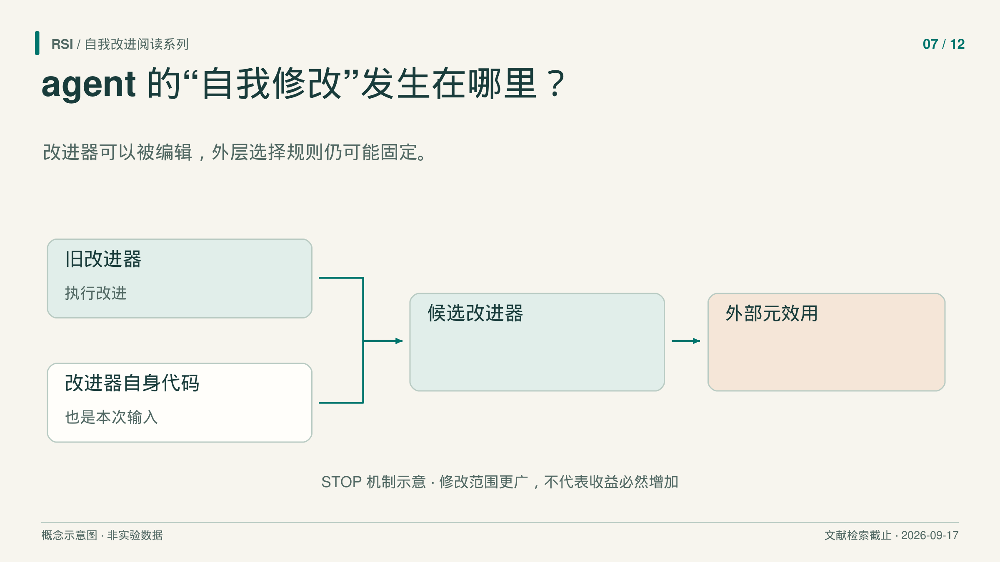
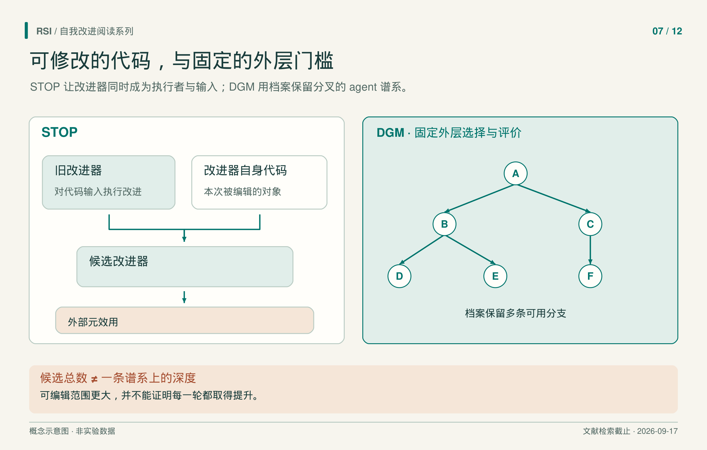

写代码的 agent 通常有一套固定流程：读失败记录，请语言模型提出补丁，运行测试，再决定保留什么。如果这套流程反复做出同样的错误选择，增加尝试次数可能只是重复缺点。一个办法是让流程本身也可以被修改。
这引出了两个问题：系统是否真的改到了产生修改的程序？改过以后，它是否更会产生有效修改？前者须核对代码变化与执行记录，后者还需要对照实验。
STOP、Gödel Agent 和 Darwin Godel Machine 分别实现了不同形式的自修改。区分它们时，可以依次检查可编辑代码、持久状态，以及仍在循环外固定不变的规则。

让改进器成为自己的输入
STOP 从一个改进器开始：这个程序接收待改代码和评分函数，调用语言模型提出修改，再返回改进后的程序。关键一步，是把改进器自己的实现交给它，作为下一轮的待改代码。
旧改进器同时占据两个位置：一方面，它是正在执行修改的程序；另一方面，它的源码也是被修改对象。得到的新程序就可以改变下一次产生候选的方式。这构成具体的递归代码改进，不要求更新底层语言模型。
系统用外部元效用给改进器评分：让候选改进器处理一组下游程序任务，再计算这些任务上的平均表现。语言模型保持冻结，任务、元效用、预算和外层迭代数仍由研究者指定。
这个评分方法也限定了结论范围。候选改进器能在给定任务上产出更好程序，说明它在这些条件下有收益；不能由此证明它下一次改写自己还会继续变好。
实验恰好展示了这一区别。在带噪奇偶学习任务中，GPT-4 多次运行的平均保留表现最初几轮上升，GPT-3.5 和 Mixtral 的平均轨迹却下降。作者另外选出一个经过四轮、表现较好的改进器，在五个新下游任务上均优于初始版本。这是选定程序的转移结果，不是所有运行的成功率。
让运行中的 agent 检查并替换逻辑
Gödel Agent 把自省与代码修改放进运行时工具。语言模型可以查看自身实现、与环境交互、修改任务 policy，也可以修改分析与产生改动的逻辑。运行时替换程序组件的方式通常称为 monkey patching。
这样，更多运行逻辑进入可编辑范围，修改会影响下一次递归调用。任务目标、环境、效用接口和基础模型权重，仍然提供外部结构。
名称也需要准确理解。Gödel Agent 依赖任务表现反馈接受修改，并不要求先证明一次重写会提高效用。不能因为名字都指向自修改，就把早期 Gödel machine 的形式证明保证直接移到这里。
约束版和自由版还展示了资源条件的重要性。约束版 Gödel-base 的 MGSM 测试结果为 64.2 ± 3.4%，论文列出的 Meta Agent Search 对照为 53.4 ± 3.5%，区间为 95% bootstrap 置信区间。搜索使用 GPT-4o，得到的 policy 在测试时使用 GPT-3.5；不能据此说整个优化都是 GPT-3.5 完成的。
自由版 Gödel-free 可以自行请求 GPT-4o 等更强模型，因此更高分数同时改变了可用模型资源。它可能有实用价值，但回答的已经不是固定模型条件下修改程序能带来多少收益。
保留分支，而不只保留最后一个版本
单线重写可能丢掉一个暂时没有收益的修改。Darwin Godel Machine，简称 DGM，则用档案保存多个 coding agent。选出的父代读取评价日志、诊断问题，再改写自己的代码，工具实现与调用模型的工作流都可以改变。
只要后代满足基本可用条件，例如能够编译、仍能编辑仓库，就可以进入档案；它不必立即超过父代。父代选择偏向表现较好、子代较少的 agent，同时为其他可用父代保留机会。
因此，搜索可以保留多条路线，也可以回到较早的分支继续尝试。暂时不占优势的中间程序，有机会成为后续改动的基础。持久的 agent 代码与持久的搜索历史，在同一个系统里承担不同作用。

分支为机制示意，不编码实测分数或实际谱系数量。总候选数与单条谱系深度是不同统计对象。
DGM 仍有清楚的外层边界。报告设置中，基础模型冻结，档案维护、父代选择和外层搜索程序不可自修改。因此，改变编码工作流是一个明确的干预，其周围仍有固定过程。
先认清曲线到底记录什么
DGM 主运行各生成 80 个新 agent。这是生成迭代数，不表示同一条后代链达到 80 层；分支搜索会让两个数字不同。
论文报告，在参与搜索的 200 道 SWE-bench Verified 子集上，档案最佳分数从 20.0% 升到 50.0%。这个 50.0% 不是完整 SWE-bench Verified 成绩。完整 Polyglot 复评则由 14.2% 升到 30.7%，对应另一组模型与评价设置。
档案最佳曲线记录的是保留的最好个体，不是最后生成的个体。搜索题也参与了选择，所以不能把这些曲线统一当作未接触保留任务上的成绩。本系列依据的是 2026 年 3 月所读 DGM v3，不能把其中全部实验都写成论文首次公开于 2025 年时已有的结果。
预算还要单独记录。相同生成数不意味着相同模型调用、token、执行时间或 API 成本；最终更强的 agent 解决新任务时，也可能花更多资源。开发一个 agent 的支出，与部署它的支出，应分别说清。
持久性也值得单独检查。保存补丁文件，只说明状态可以写下来；新任务是否载入这些补丁，运行时能否保留相同作用，还需要执行记录。这个判断方法适用于代码和工作流，并不要求模型权重改变。对照旧、新版本时，应记录它们分别读到什么历史、用了什么工具，以及哪些资源限制保持一致。
进一步测量改进器时，还可以冻结两个版本，让它们在相同预算下产生新的候选，再比较候选质量。这项建议把“当前 agent 更强”与“它更会产生后代”放进两个可区分的实验。
这些方法展示了把修改者放入可编辑程序的不同办法，也说明递归结构本身不能保证分数持续上升。检查新系统时，先定位改了哪些代码、保留哪些固定规则，再看实验测的是任务表现、产生改进的能力，还是两者都测。
精选原始来源
STOP · Gödel Agent · Darwin Godel Machine。
本文基于文献纳入截至 2026 年 9 月 17 日的书稿整理，结果对应书稿实际核对的版本，并非新一轮文献检索。